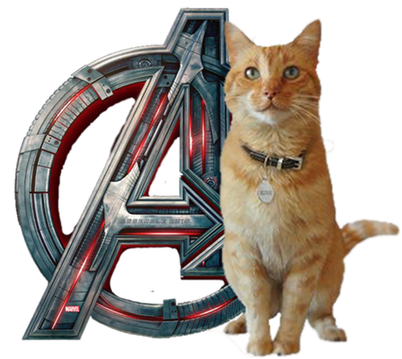
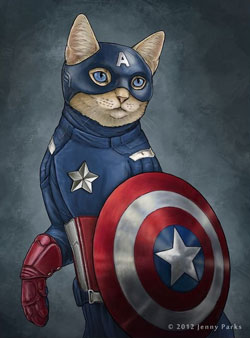
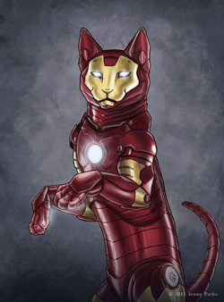
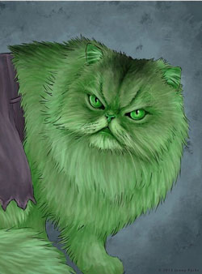
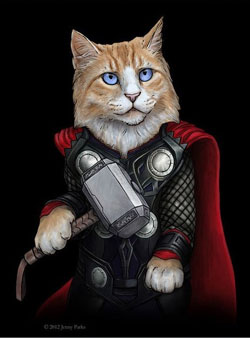
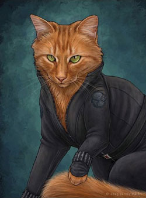

КОТИ МАРВЕЛ






Стиль бою Капітана Америки включає в себе дзюдо, бокс, східні єдиноборства. Він природжений лідер, що володіє якостями блискучого тактика і стратега. Капітан вміє пілотувати, є експертом з виживання, шпигунства, вибухів і ведення бою. Крім того, він захоплюється малюванням, історією і юриспруденцією. **Здібності:** Капітан Америка є кінцевою точкою в розвитку людського тіла (мається на увазі звичайне тіло, не наділене надздібностями). Капітан Америка має неперевершену спритність, силу, швидкість, витривалість і прискорену реакцію, вищу, ніж у будь-якого атлета. Сироватка Суперсолдата, яку прийняв Стів, поліпшила всі його фізичні якості до найвищого рівня.
Тоні Старк, геніальний винахідник і багатющий промисловець з репутацією плейбоя, страждає від поранення, отриманого ним у полоні, де його змусили розробити для терористів зброю масового ураження. Замість цього він створює високотехнологічний костюм-броню, за допомогою якого збігає з полону. Пізніше Старк покращує свою броню озброєнням і пристроями, створеними на базі ресурсів його компанії, і використовує обладунок, щоб захищати мир в образі Залізної людини, перший час приховуючи свою особистість. **Сили і здібності:** Броньований, оснащений новітньою зброєю костюм, що дає нелюдську силу. Геній-винахідник, механік, інженер. Здатність до польоту. Освоїв навички бойових мистецтв. Зброя — світлові імпульси.
Під час експериментального вибуху гамма-бомби вчений Брюс Беннер кинувся рятувати підлітка, який приїхав на випробувальний полігон. Зіштовхнувши хлопчиська, Ріка Джонса, в траншею, сам Беннер виявився у вибуху, отримавши масивну дозу радіації. Пізніше він прийшов до тями в лазареті, здавалось, порівняно неушкодженим, але вночі перетворився в громіздку сіру форму, проломив стіну і втік. Солдат з послідувала пошукової партії назвав інакше непізнане створення «велетнем». **Здібності:** суперсила, супершвидкість, невразливість і зцілюючий фактор, адаптація, абсорбція, емпатія.